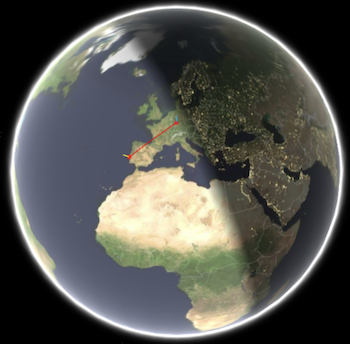
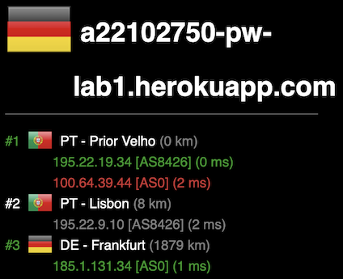
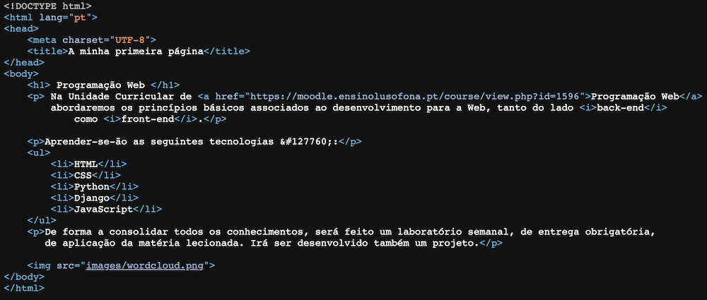
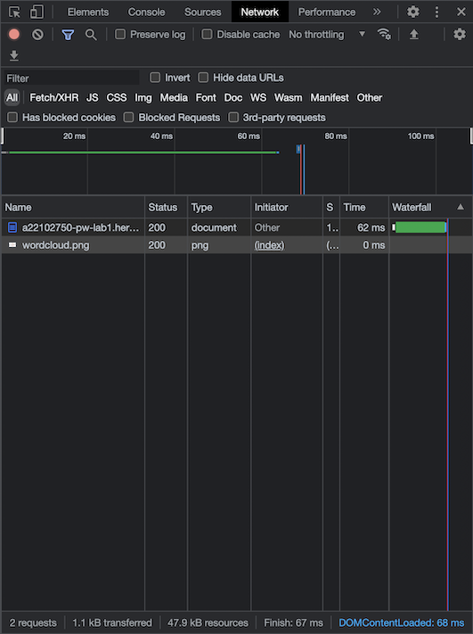

Neste caso, vamos ver que rota os pacotes IP fazem, desde o nosso computador (Portugal) até um endereço IP destino/ou URL que especifique (https://a22102750-pw-lab1.herokuapp.com).
Como podemos ver nas imagens anteriores, o local do servidor em que App se encontra é em Dublin, Irlanda. No entanto, os pacotes IP apenas vão até a Frankfurt, Alemanha. Na imagem abaixo, podemos ver que durante a transferência de pacotes IP, ocorreu um erro em Prior Velho, que muito provavelmente foi o principal responsável para os pacotes não chegarem ao seu destino.
 Após análise do código recebido e do código realizado, até então, foi determinado que o código recebido era exatamente igual ao realizado no IDE
Depois, de aceder ao browser developer tool e selecionar a barra network foi possível obter informações acerca dos ficheiros carregados para o browser. Como podemos ver na imagem abaixo.
Através da análise da imagem é nos possível retirar algumas informações, como por exemplo, a quantidade de ficheiros descarregados, que neste caso foram apenas 2, sendo o primerio do tipo document e o segundo do tipo png, o tempo de espera e de descarga do primeiro ficheiro foi, respetivamente de 61.37 ms e de 63.75 ms, já o segundo ficheiro obteve em ambos os tempos o valor de 0 ms.
Depois de selecionado cada ficheiro descarregado, na barra preview é nos possível observar, como nos diz a palavra uma previsão do conteúdo de cada ficheiro. De seguida, na barra dos Headers é nos possível obter algumas informações, como por exemplo, o URL em que foi carregado, o seu Remote Adress, o Status Code, entre outros. E por último, na barra Timing é possível ver, todos os tempos desde o começo do carregamento do ficheiro para o browser até à sua conclusão.
Para obter os IPs pedidos foi usada a seguinte ferramenta 👉 IP Lookup
Para obter a rota dos pacotes IP foi utilizada a seguinte ferramenta 👉 GeoTraceRoute